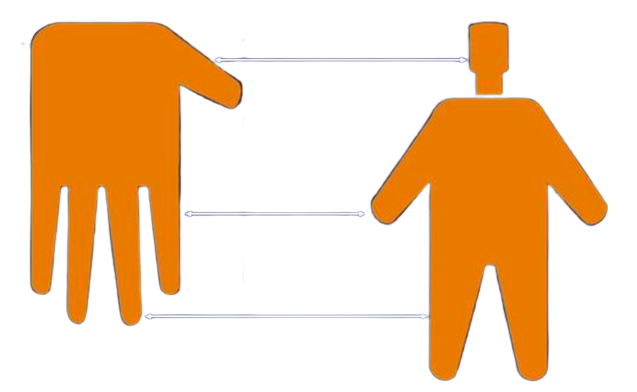
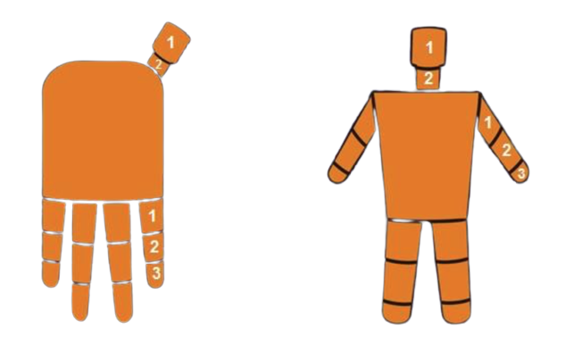
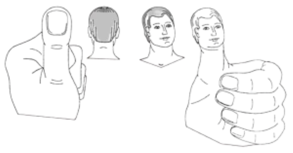
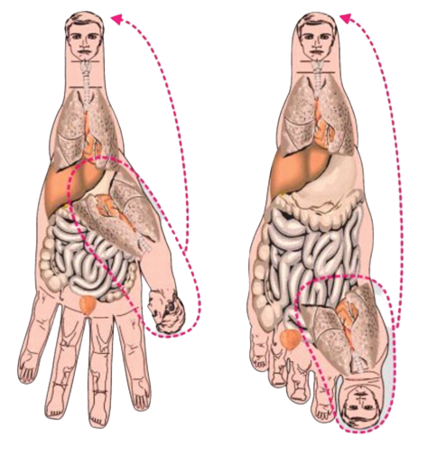
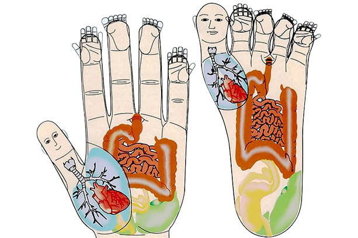
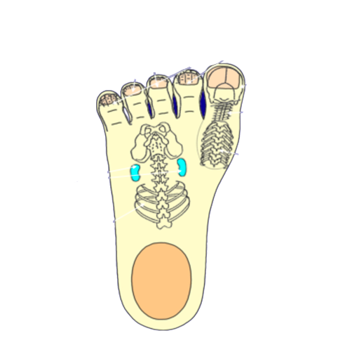
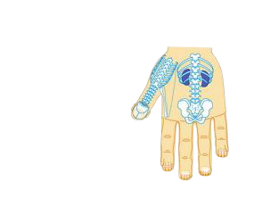

منذ القدم والجنس البشري يعلم ان مناطق معينة من اجسامنا تكون لها ردود افعال
وتتفاعل مع مناطق اخرى بكل اعضاء اجسامنا
واستخدموا هذه المعرفة لتشخيص وعلاج الامراض اما بالوخز بالابر او المساج
او التدفئة، ونذكر ان القيام بالتشخيص يكون اما بالعين او نظرية الاذن.
يمتلك الجسم اعداد عظيمة من اجهزة الاستجابة والتي تمثل الطاقة والمعلومات لكافة الاعضاء
ولاجزاء معينة من الجسم والتي تقع على السطح وفي داخل كل عضو او جزء منه وهي تقوم بالعمل
مثل نظام التحكم عن بعد.
وهذه الانظمة تعمل بالطرق التالية:
امواج مغناطيسية- كهربائية دائرية قصيرة تتواجد في العضو المصاب او جزء من الجسم
كنتيجة لخلل في تدفق الطاقة الدائرية.
هذه الامواج تتناثر في كافة الاتجهات في الجسم في المناطق المسماة الكريات الاستجابية
والتي تتشكل هناك ، وهذه المناطق حساسة لاي فعل خارجي ومؤلمة عند الضغط عليها.
التحفيز الطبيعي أو الاصطناعي لكريات الاستجابة ينتج موجات كهرومغناطيسية
موجهة عائدة الي المنطقة المصابة وذلك لازالة اي خلل في الطاقة وعلى مستوى الجسم.
في البداية نلاحظ أن العلاج بالسوجوك يرى إن الجسد يتكون من أجزاء خارجية خمسة هي
(الرأس واليدين والرجلان)، وكذلك اليد تتكون من أصابع عددها خمسة،
وإذا تساءل أحدهم أين تماثل وتشابه الأعضاء الداخلية في جسم الإنسان،
نجيب نعم هناك تماثل بين الأعضاء الداخلية وراحة اليد وباطن القدم.
اذا القينا نظرة على يدنا نستطيع ان نرى ان اليد تحتوي الابهام وهو يمثل
الراس والاربع اجزاء ( الاصابع ) .
الابهام يحتوي جزئين يمثلان الراس والرقبة.
كل طرف من الاطراف الاربعة التي في الجسم تحتوي ثلاثة اجزاء.
في الذراع : الذراع العلوي، الساعد، واليد .
في الرجل : الفخذ، الساق، القدم .
| أجزاء الجسم |
أجزاء اليد والقدم |
| الرأس: أعلى جزء – أقصر الأجزاء – أعرض الأجزاء – يتكون من الرقبة والرأس. |
الإبهام يماثل الرأس فهو الأعلى والأقصر والأعرض ويتكون من سلاميتين. |
| الرجلين: أطول من اليدين – تتكون كل واحدة من ثلاثة أجزاء القدم والفخذ والساق. |
الإصبع الوسطى والبنصر: أطول من السبابة والخنصر وتتكون كل واحدة من ثلاثة سلاميات. |
| اليدين: أقصر من الرجلين وتتكون كل يد من ثلاثة أجزاء القبضة والساعد والكتف. |
الإصبع السبابة والخنصر: أقصر من الوسطى والبنصر وتتكون كل إصبع من ثلاثة سلاميات. |




إن البطن والصدر والوجه وهي الأجزاء الأمامية التي تؤلف الجسد،
تتماثل مع اليد والقدم من الباطن، أما الأجزاء الخلفية للجسد
فتتماثل مع الوجه الظاهري لليد والقدم كما في الصور أدناه:



إن استخدام المادة الطبيعية للتحفيز أثناء العلاج بالسوجوك هو أكثر فاعلية،
ومن المواد الطبيعية التي يمكن استخدامها هي بذور النباتات،
بشرط أن نختار منها المشابه للعضو المريض في الجسم، وهي كثيرة:
- يمكن لعلاج أمراض العين (النظر)، وأمراض الأذن (السمع) بواسطة بذور الرمان.
- بذور الرز لعلاج النوبات التي يسببها مرض الربو، وكذلك نوبات السعال.
- لأمراض الجهاز الهضمي كالإمساك يمكن استخدام بذور الكتان، وكذلك لعلاج ألم الأسنان.
- مرض التهاب العينين يعالج بواسطة بذور نبات القطيطة (الأذريون).
- أما بذور البازيللاء فتستخدم لعلاج أمراض حصر البول وأمراض فقر الدم.
- بذور الفاصولياء للكلى.
- وبذور الذرة لعلاج مرض ارتفاع الضغط ومرض الصرع.
- الفلفل الاسود لتسخين وتحمية العضو المتوعك، مثلا العظام، العمود الفقري، الساقين، الذراعين ، الكتفين، كما يستعمل في علاج الاعضاء التناسلية.
وتكون الطريقة بوضع حبة البذرة المطلوبة على النقاط التماثلية ولفها،
والضغط عليها لمرات متكررة وبفواصل زمنية محددة حتى الشفاء.